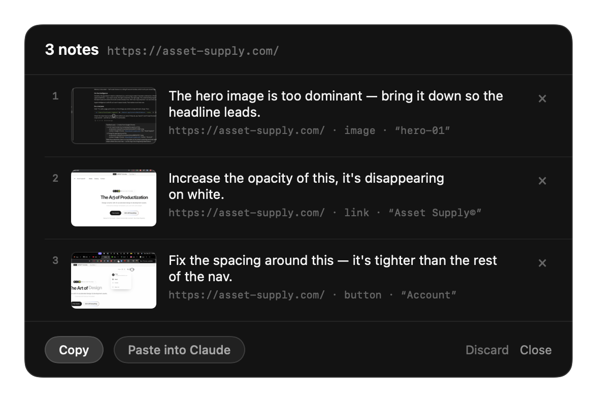
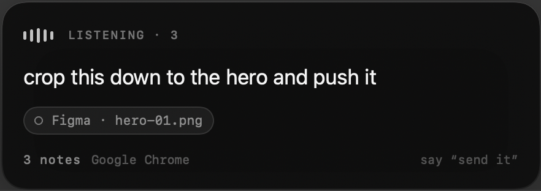
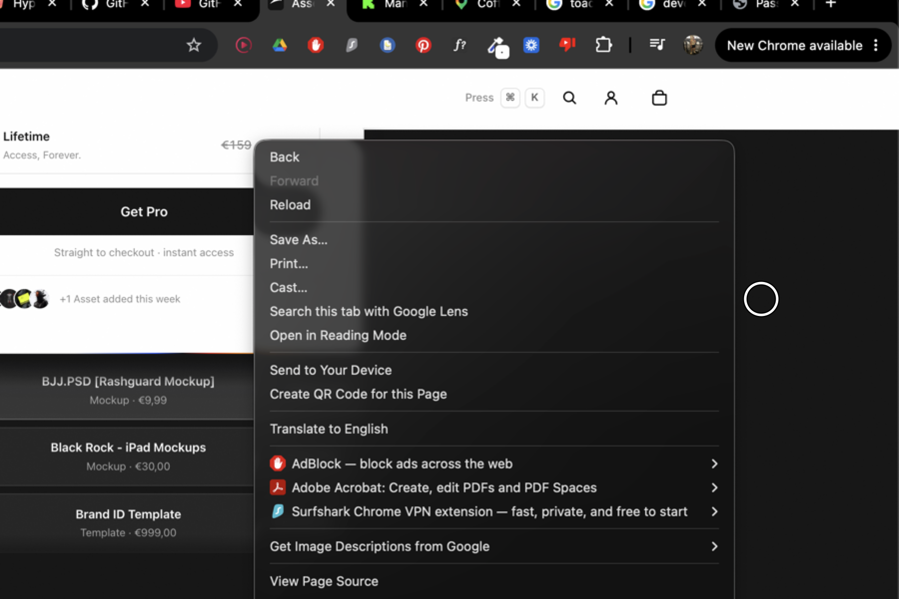
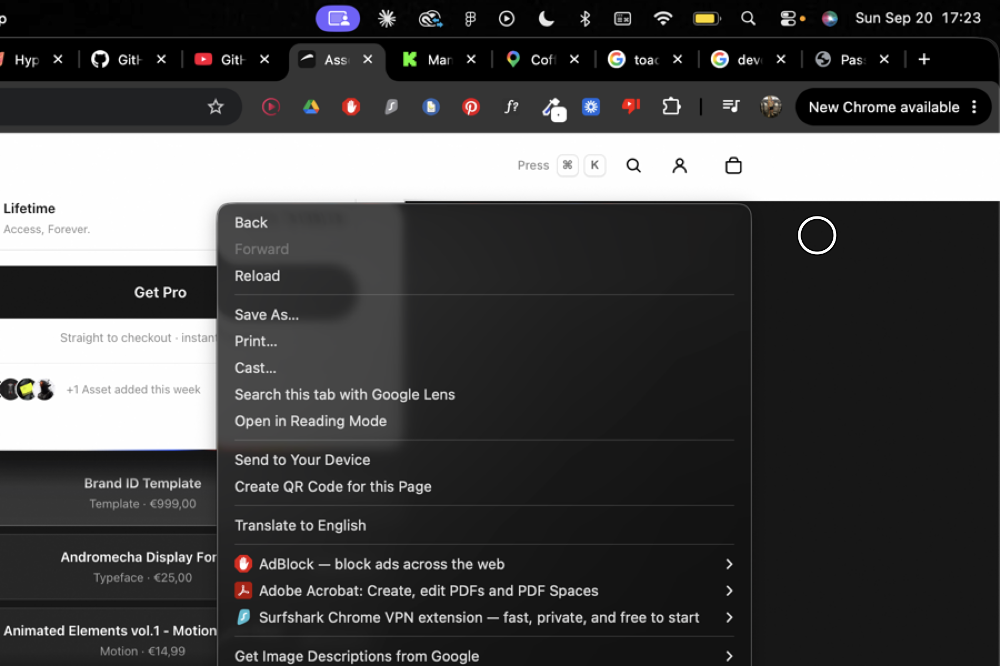

A finished pass

“Increase the opacity of this.”
One hold
Every pause closes a note and it keeps listening.

Per word


What you get
Feedback pass — 3 notes from asset-supply.com 1. The hero image is too dominant — bring it down so the headline leads. screenshot: ~/.ambient/shots/8AFCC5BE-1.png context: https://asset-supply.com/ · image · “hero-01” 2. Increase the opacity of this, it's disappearing on white. screenshot: ~/.ambient/shots/B802670C-1.png context: https://asset-supply.com/ · link · “Asset Supply©”
On device
System speech model, on device. No audio uploaded.
Frames held in memory while you hold, discarded after.
Capture halts on secure input, automatically.
None required. It never sends on your behalf.